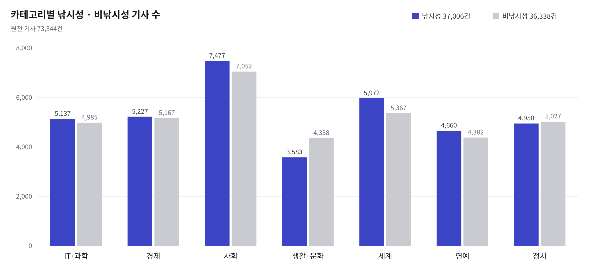
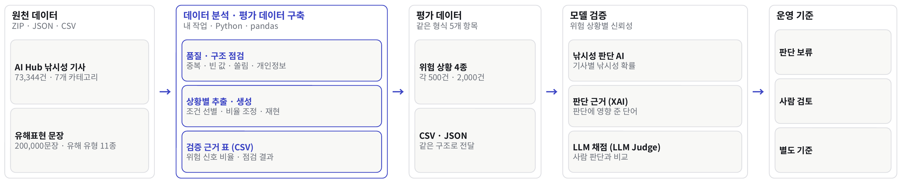
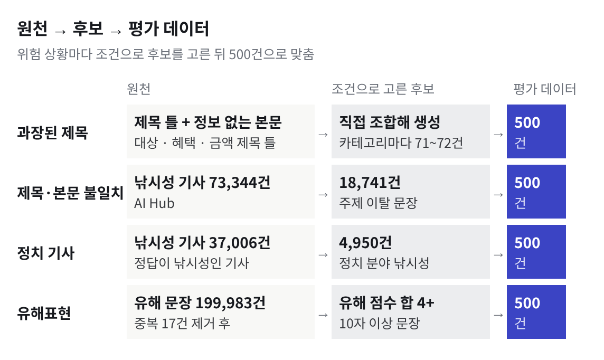

01
개요

문제
- 낚시성 기사 탐지 AI는 평균 정확도만으로는 특정 유형의 기사에서 판단이 흔들리는지 알 수 없음
해결
- 신뢰가 흔들리는 4가지 상황(과장된 제목, 제목 · 본문 불일치, 정치 기사, 유해표현)을 정의하고 상황마다 500건, 총 2,000건 평가 데이터 구축
02
원천 데이터 → 평가 데이터 → 모델 검증 → 운영 기준

| 위험 상황 | 특징 · 위험 |
|---|---|
| 1 과장된 제목 | 제목은 큰 혜택처럼, 본문은 조건 · 구체성 부족 → 정상 기사로 오판 |
| 2 제목 · 본문 불일치 | 제목과 본문이 서로 다른 내용 → 입력 부분에 따라 판단이 바뀜 |
| 3 정치 기사 | 정치 분야 낚시성 기사 500건 (후보 4,950건에서 층화 추출) |
| 4 유해표현 | 비판 · 인용 맥락으로 쓰인 유해표현 → 검토가 필요한 기사를 놓침 |
내 작업
03
상황별 평가 데이터 구축

공통 형식5개 필드로 통일
출처가 다른 두 데이터를 같은 구조로, CSV · JSON 동시 제공
조건 분리상황별 노트북 4개
위험 상황마다 추출 · 생성 기준을 코드로 분리
재현성재실행해도 같은 결과
무작위 값 고정, 행 수 · 카테고리 분포 자동 확인
04
데이터 품질 검증
| 점검 항목 | 결과 | 기준 |
|---|---|---|
| 기사 ID 고유성 | 중복 0건 · 누락 0건 | ID 중복 · 누락 확인 |
| 제목 · 본문 완전성 | 100% | 공백 제거 후 비어 있지 않음 |
| 카테고리 편중 | 최대 19.8% | 7개 카테고리 · 사회 최다 |
| 개인정보 패턴 | 12건 | 전화 · 이메일 · 주민번호 정규식 |
| 유해표현 중복 | 17건 제거 | 200,000 → 199,983건 |
점검 결과는 검증 근거 CSV로 남겨 팀이 같은 기준으로 확인
시스템 분석
05
평균에 숨은 위험을 세부 집단별로
| 위험 상황 | 팀 검증 결과 (시스템 분석) |
|---|---|
| 과장된 제목 | 낚시성 기사의 72%를 찾아냄 |
| 제목 · 본문 불일치 | 제목만 · 본문만 볼 때 판단이 다른 기사 18% |
| 유해표현 | 사람이 봐야 할 기사 중 6.7%를 놓침 |
A.X 모델 낚시성 확률, TF-IDF + Logistic Regression 위험 유형 분류, Integrated Gradients · LLM Judge로 판단 근거 확인
위험도별 운영 기준
판단 보류정보가 부족하거나 설명이 불안정한 기사
사람 검토제목 · 본문 불일치 시 두 입력을 함께 보고 검토로 전달
정책 우선유해표현 위험이 감지되면 모델 확률보다 운영 정책